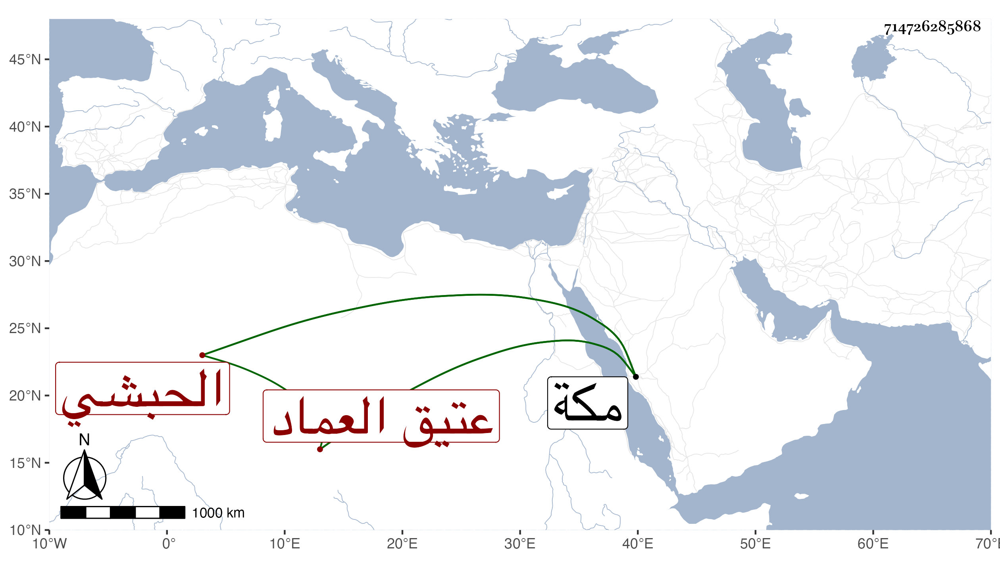

0902Sakhawi.DawLamic.ITO20230111-ara1.EIS1600.714726285868
Biography ID: 714726285868
440
صفية ابنة ياقوت الحبشي عتيق العماد يحيى بن محمد به فهد وأم أحمد وعبد العزيز وخالة النجم بن فهد لأنها أخت أمه لامها ؛ ولدت في ليلة عيد الفطر سنة أربع و ثمانمائة بمكة وأجاز لها ابن صديق والزين المراغي وعائشة ابنة ابن عبد الهادي والعراقي والهيثمي وآخرون بل سمعت على ابن سلامة ؛ أجازت لنا وماتت في صبيحة يوم الأربعاء ثاني عشر ذي الحجة سنة اثنتين وسبعين بمكة .
